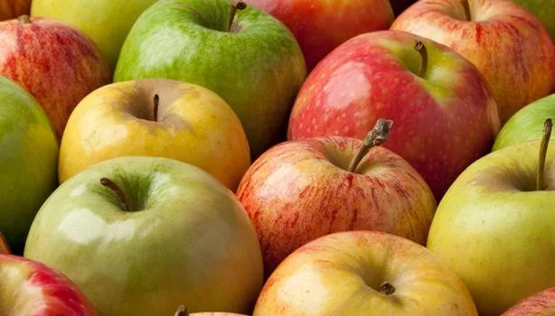

Inicio
Manzana

Los manzanos se cultivan en todo el mundo y son las especies
más utilizadas del género Malus. El árbol se originó en Asia
Central, donde su ancestro salvaje, Malus sieversii,
todavía se encuentra hoy en día. Las manzanas se han
cultivado durante miles de años en Asia y Europa y fueron
llevadas a América por colonos europeos.
Las manzanas tienen un significado religioso y
mitológico en muchas culturas, incluyendo la tradición
nórdica, griega y cristiana europea.